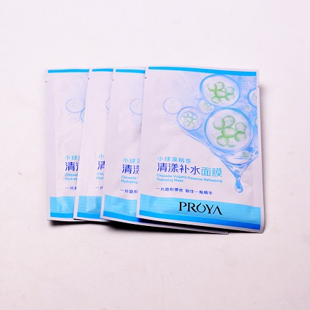

<!DOCTYPE html>
<html>

	<head>
		<meta charset="utf-8" />
		<title></title>
	</head>

	<body>

	</body>

</html>
<!DOCTYPE html>

<head>
	<meta charset="utf-8" />
	<title></title>
	<style>
		* {
			margin: 0;
			padding: 0;
		}
		
		body {
			color: #666;
			width: 960px;
			background-image: url(img/57436254060546986.jpg);
			background-size: cover;
			margin: 0 auto;
		}
		
		.nav {
			width: 600px;
			height: 50px;
			font: bold 0/50px Arial;
			text-align: center;
			margin: 0px auto;
			border-radius: 8px;
		}
		
		.nav a {
			display: inline-block;
			-webkit-transition: all 0.2s ease-in;
			-moz-transition: all 0.2s ease-in;
			-o-transition: all 0.2s ease-in;
			-ms-transition: all 0.2s ease-in;
			transition: all 0.2s ease-in;
		}
		
		.nav a:hover {
			-webkit-transform: rotate(10deg);
			-moz-transform: rotate(10deg);
			-o-transform: rotate(10deg);
			-ms-transform: rotate(10deg);
			transform: rotate(10deg);
		}
		
		.black {
			background: #2c2c2c;
			box-shadow: 0 7px 0 #0b0b0b;
		}
		
		.nav li {
			position: relative;
			display: inline-block;
			padding: 0 16px;
			font-size: 13px;
			text-shadow: 1px 2px 4px rgba(0, 0, 0, .5);
			list-style: none outside none;
		}
		
		.nav li::before,
		.nav li::after {
			content: "";
			position: absolute;
			top: 14px;
			height: 25px;
			width: 1px;
		}
		
		.nav li::after {
			right: 0;
			background: -moz-linear-gradient(top, rgba(255, 255, 255, 0), rgba(255, 255, 255, .2) 50%, rgba(255, 255, 255, 0));
			background: -webkit-linear-gradient(top, rgba(255, 255, 255, 0), rgba(255, 255, 255, .2) 50%, rgba(255, 255, 255, 0));
			background: -o-linear-gradient(top, rgba(255, 255, 255, 0), rgba(255, 255, 255, .2) 50%, rgba(255, 255, 255, 0));
			background: -ms-linear-gradient(top, rgba(255, 255, 255, 0), rgba(255, 255, 255, .2) 50%, rgba(255, 255, 255, 0));
			background: linear-gradient(top, rgba(255, 255, 255, 0), rgba(255, 255, 255, .2) 50%, rgba(255, 255, 255, 0));
		}
		
		.black li::before {
			left: 0;
			background: -moz-linear-gradient(top, #2c2c2c, #000 50%, #2c2c2c);
			background: -webkit-linear-gradient(top, #2c2c2c, #000 50%, #2c2c2c);
			background: -o-linear-gradient(top, #2c2c2c, #000 50%, #2c2c2c);
			background: -ms-linear-gradient(top, #2c2c2c, #000 50%, #2c2c2c);
			background: linear-gradient(top, #2c2c2c, #000 50%, #2c2c2c);
		}
		
		.nav a,
		.nav a:hover {
			color: #fff;
			text-decoration: none;
		}
	</style>
</head>

<body>
	<section class="demo">
		<ul class="nav black">
			<li>
				<a href="ten.html">&nbsp;&nbsp;&nbsp;&nbsp;&nbsp;&nbsp;主页&nbsp;&nbsp;&nbsp;&nbsp;&nbsp;&nbsp;</a>
			</li>
			<li>
				<a href="ten1.html">&nbsp;&nbsp;&nbsp;&nbsp;&nbsp;&nbsp;业务1&nbsp;&nbsp;&nbsp;&nbsp;&nbsp;&nbsp;</a>
			</li>
			<li>
				<a href="ten2.html">&nbsp;&nbsp;&nbsp;&nbsp;&nbsp;&nbsp;业务2&nbsp;&nbsp;&nbsp;&nbsp;&nbsp;&nbsp;</a>
			</li>
			<li>
				<a href="ten3.html">&nbsp;&nbsp;&nbsp;&nbsp;&nbsp;&nbsp;业务3&nbsp;&nbsp;&nbsp;&nbsp;&nbsp;&nbsp;</a>
			</li>
		</ul>
	</section>
	<div style="text-align: center; width: 600px; height: 580px;background-color:rgba(0,0,0,0.35); margin: 0 auto;">
		<center>
			<p>
				<h1 style="color: white;">化妆品添加剂</h1></p>
		</center>
		<center>
			<p>
				<h2 style="color: white;">&nbsp;&nbsp;&nbsp;&nbsp;&nbsp;&nbsp;小球藻的益处很多，但其一些做成的食品不是利于消化吸收。如果仅仅想对皮肤好的话，可以使用有小球藻成分添加的化妆品。小球藻可以去除黑色素和提高抗辐射能力。在1986年的苏联切尔诺贝利核电站泄漏事故后，日本派大量专家去苏联救援时，向当地人提供了大量的从日本带过去的小球藻以及小球藻食品，用以提高受辐射侵害者的免疫力，而使以几十万计的俄国人民免遭死亡的厄运。</h2></p>
		</center>
		<center></center>
	</div>

</body>
</html>